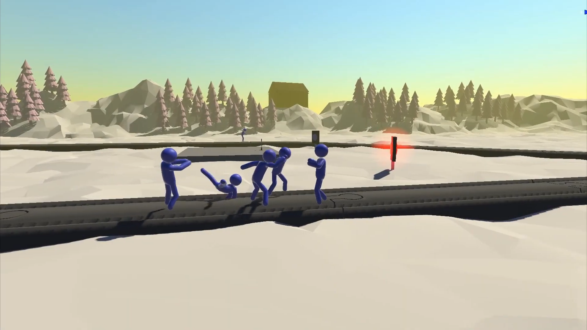
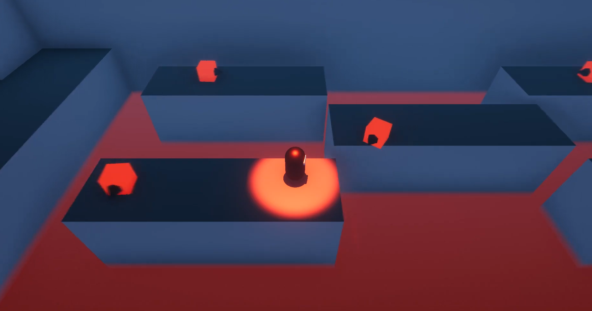
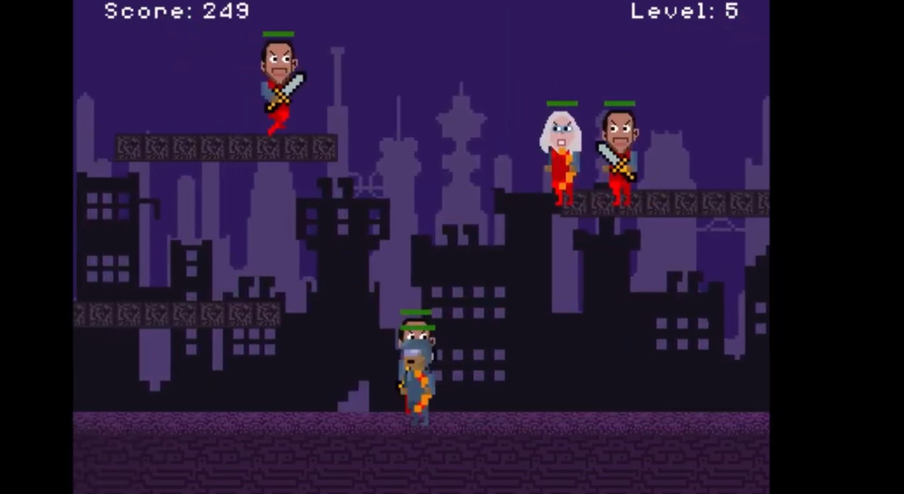
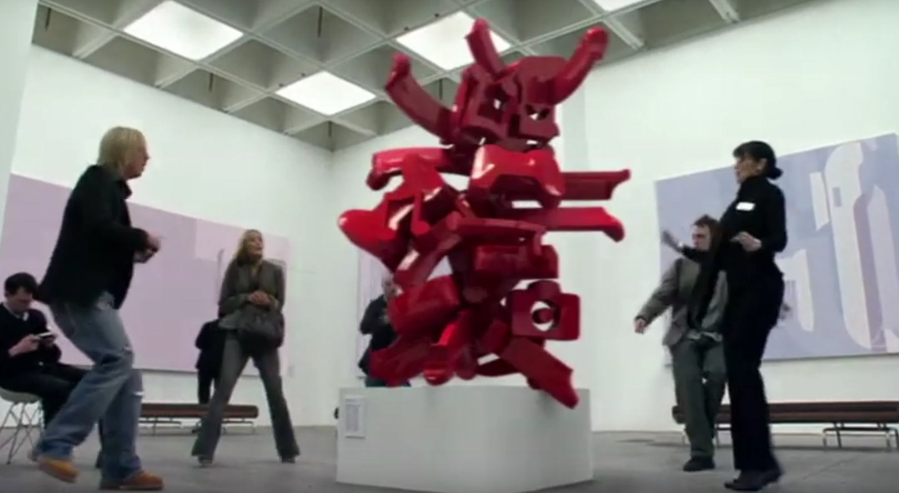
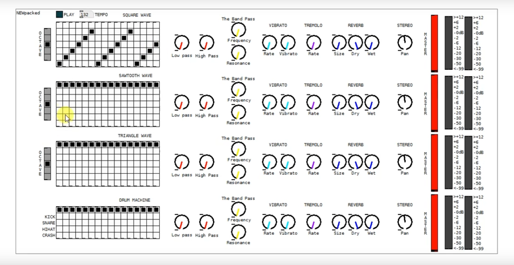
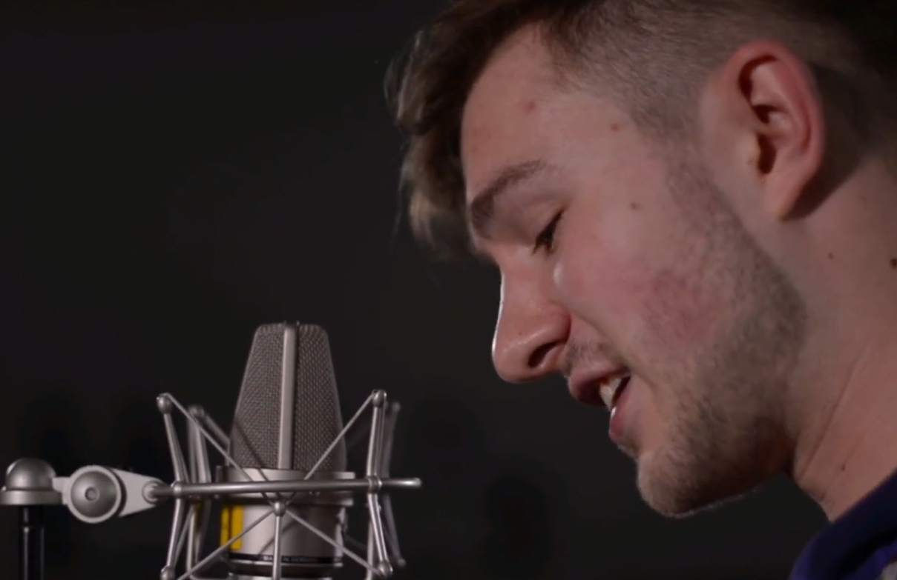

I developed Embodied Trolley Virtual Reality experience using Unity3D and C#.
The project was created for my master thesis to explore people’s moral decision
making. To do so I developed the Embodied Trolley (VR) which recreates the famous
“Trolley Dilemma” and several of its variations in virtual reality. The game is
also an online multiplayer experience where two people can play. The networking
of the experience was created with Photon Pun 2 networking package.


Stealth Boy is a third person stealth, platformer game I created using Unity3D
and coded with C#. Within the game you are a ninja called stealth boy. You can
sneak around the enemies or attack them with your sword. You also must solve
puzzles by carrying essential items such as keys around the level. The enemies
AI was created with the Unity3D NavMesh.

For the longest of times, I had a big liking for 80’s synthesizer music.
Stardust is one of such tracks where I am trying to develop music in the
style of 80's electronic music.

I worked in a team project where we developed a 2D side scroller game for our
university assignment. The game was developed using Python language and PyGame
package. My role within the team was to develop randomised map generation. I also
developed the camera view of the game and parallax scrolling effect in the game.

In my time as a freelance audio engineer, I have done audio work for film.
PSP Advertisement project is an example of how I can process and design
audio various kinds of for media. The audio for this project recorded
with zoom H6 recorders and then process with RX7 audio editor. The
audio editing and design was made in Cubase DAW.

I prototyped a digital sequenced synthesizer with additional equalization,
distortion, and reverb effects. The software was prototyped using
PureData visual coding language.

Ramu is song I covered which was originally written by Kazimieras Likša.
This project displays my capabilities as music composer. All of the track
arrangements were composed, recorded and mastered by myself.